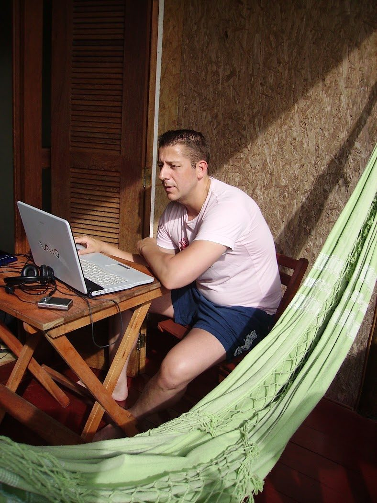
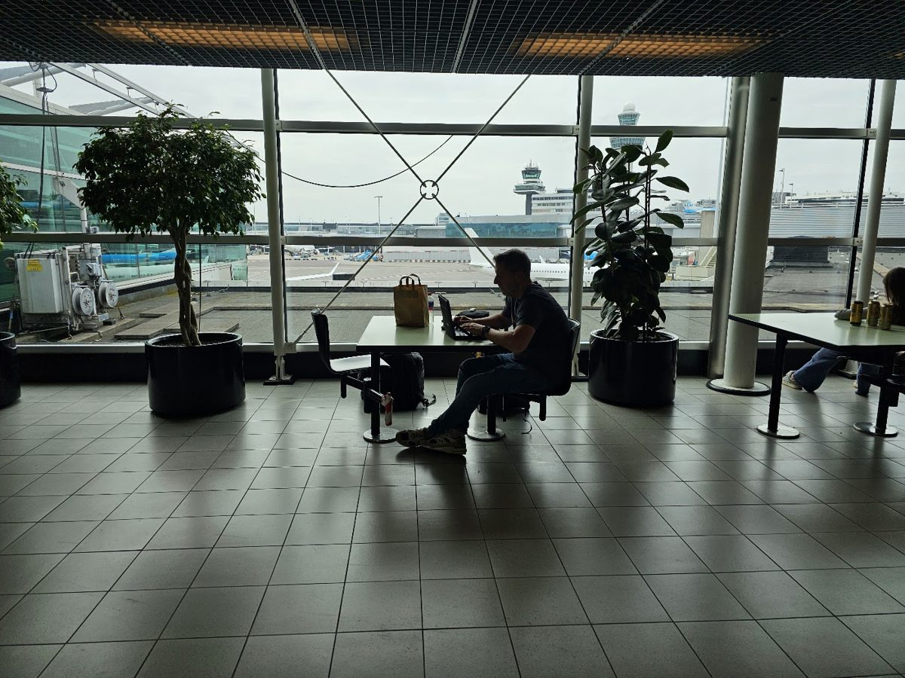
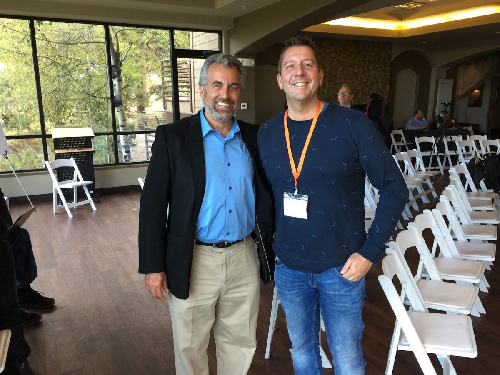
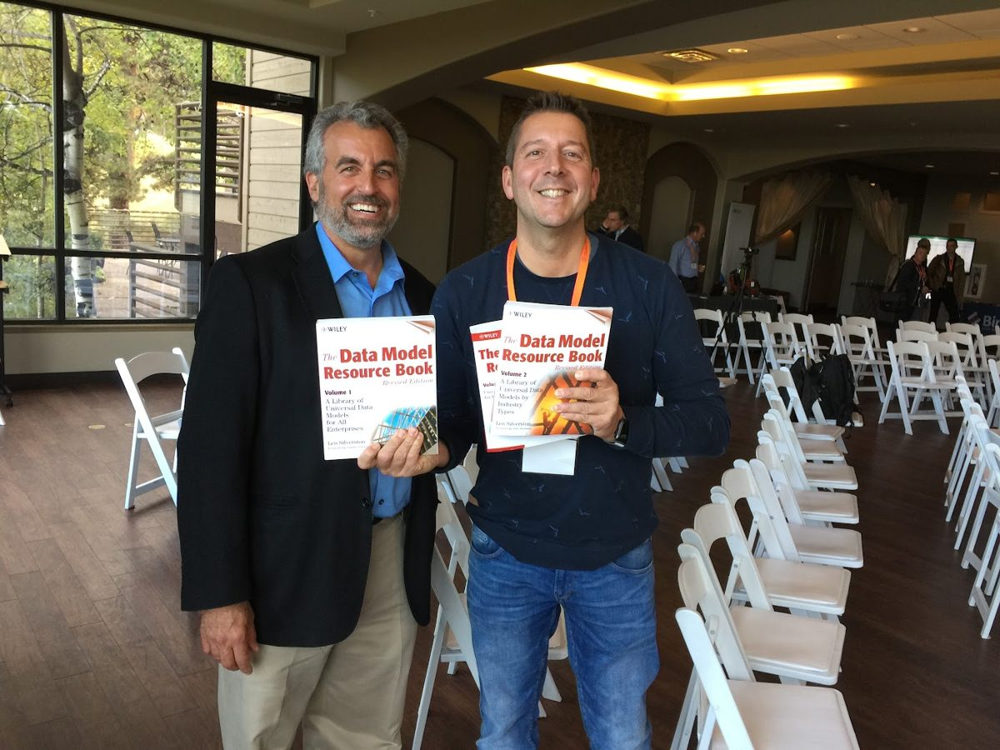
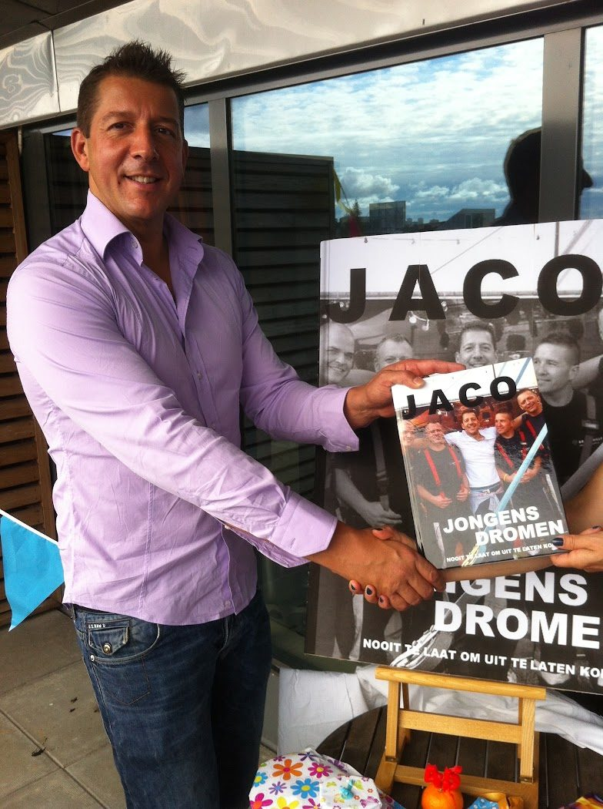
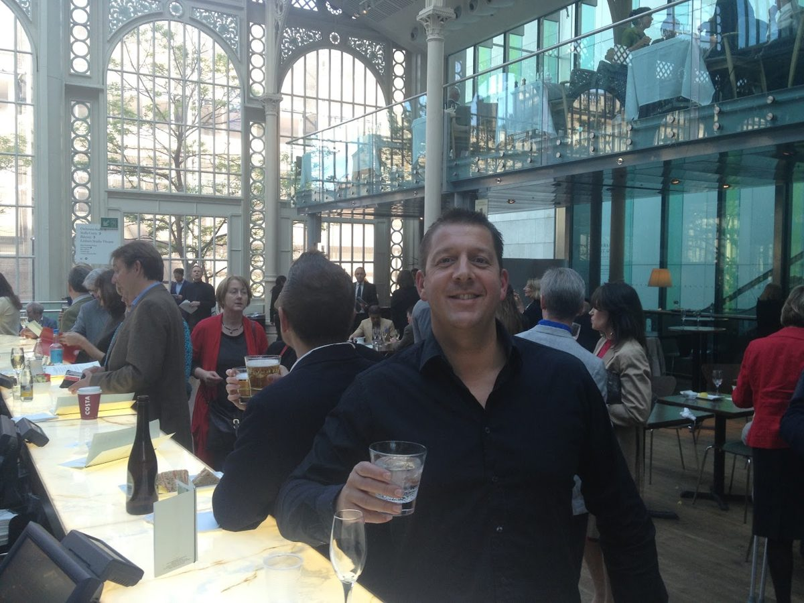
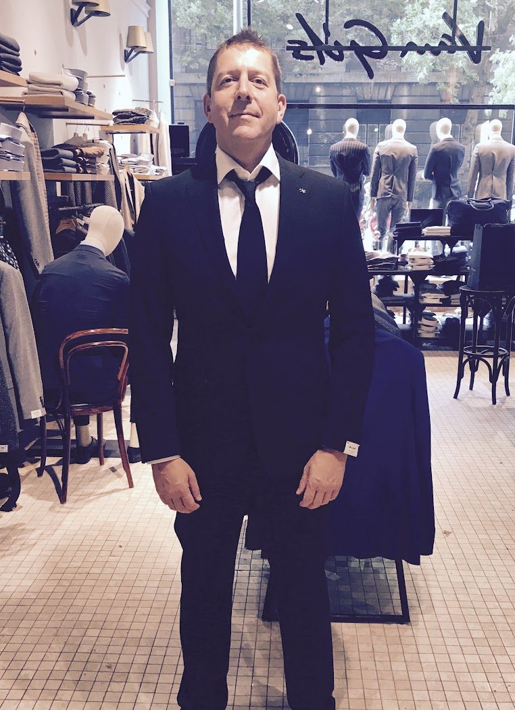

Photos
Behind the work
Twenty-five years of data work, a few events, and the places where the tools on this site were built.












Twenty-five years of data work, a few events, and the places where the tools on this site were built.






